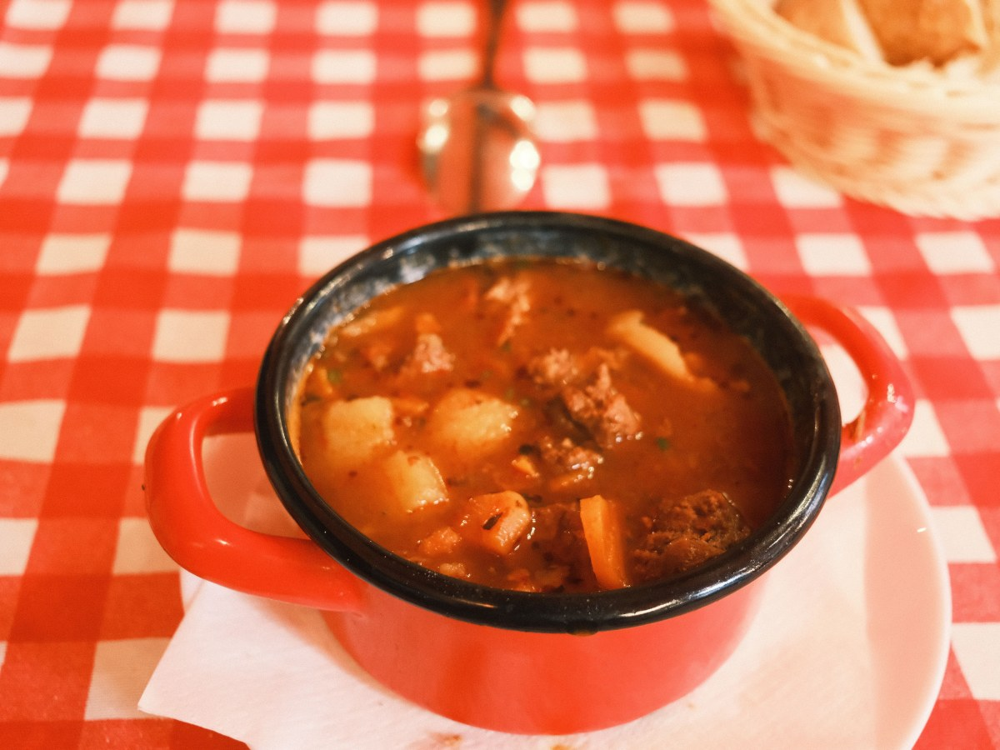
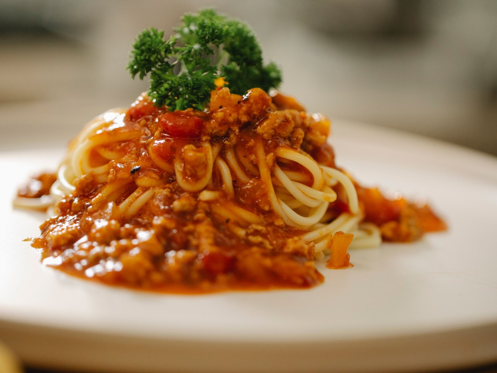
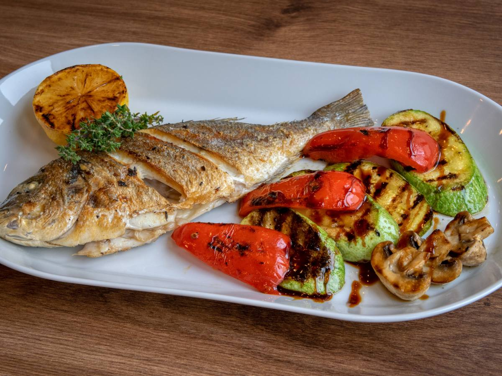
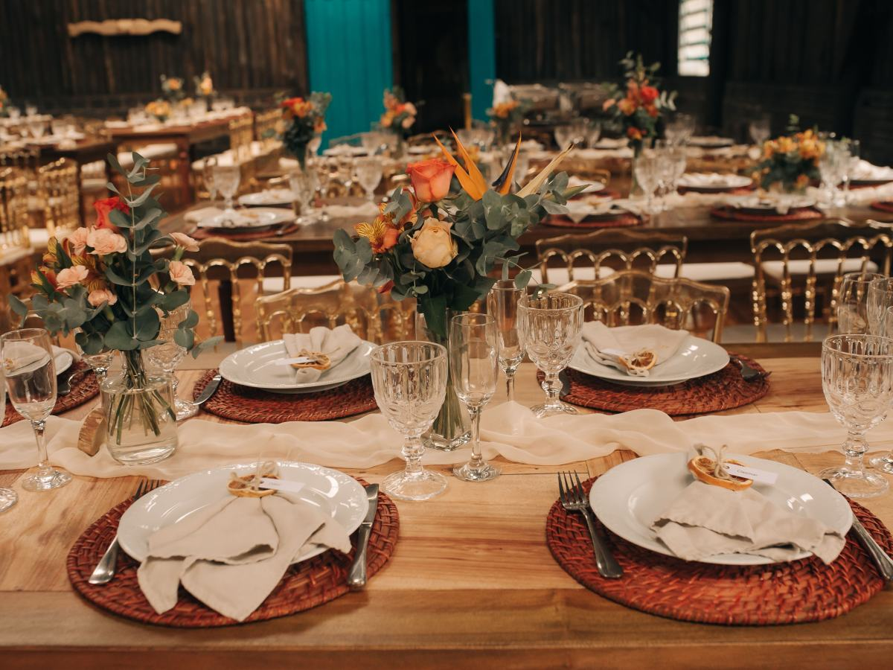
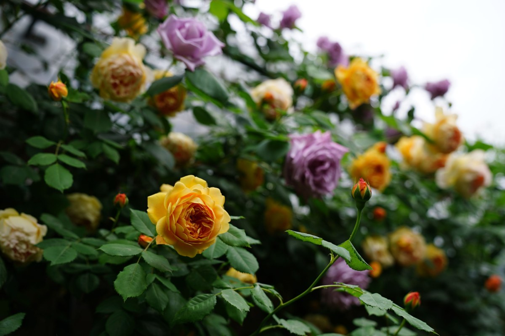
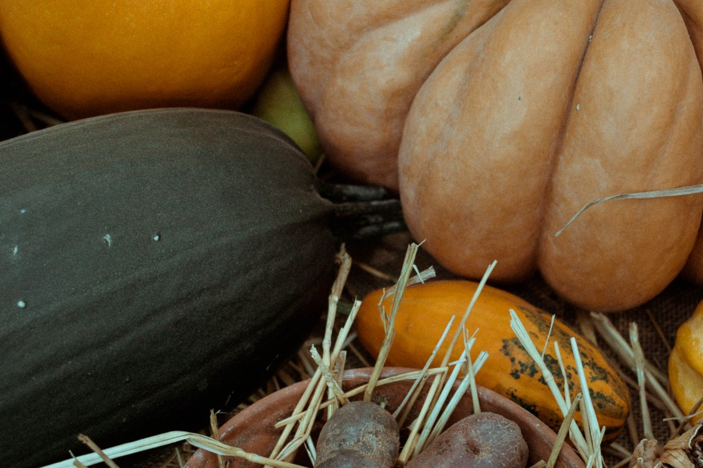
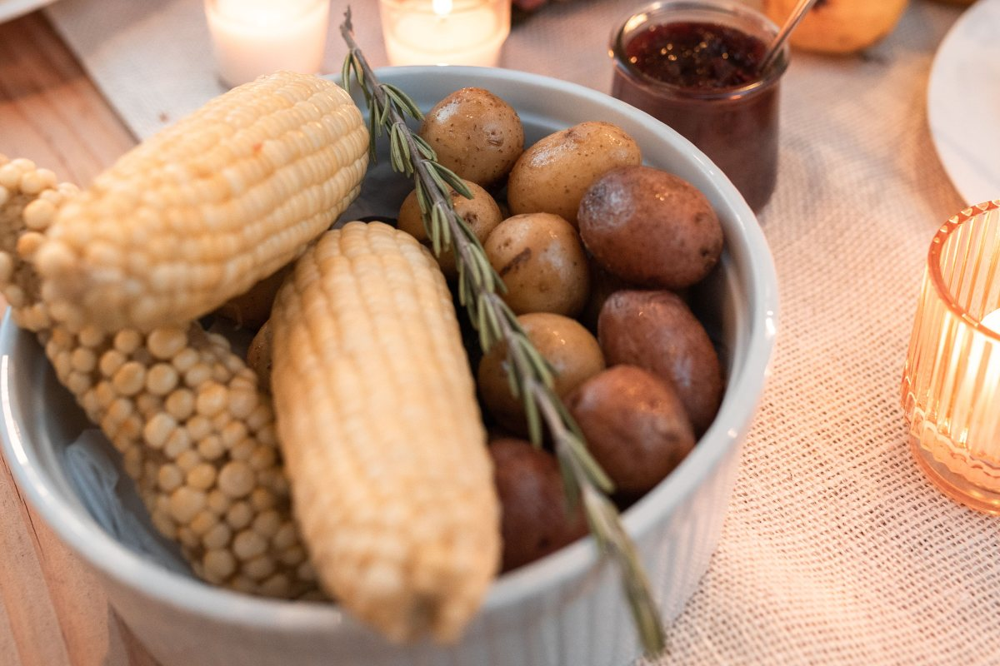
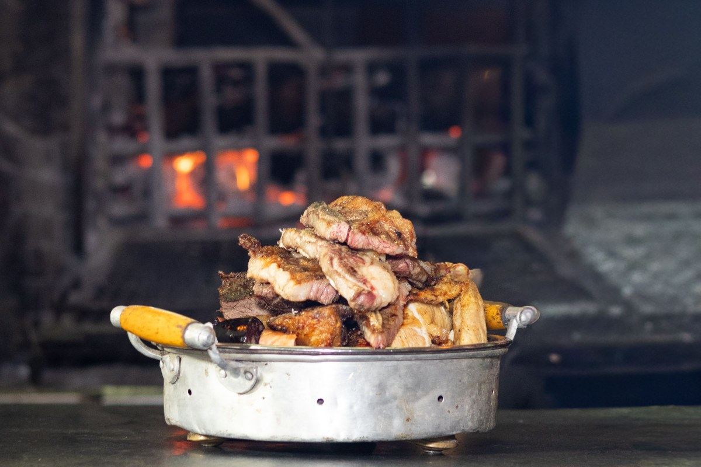

Panguipulli · Martínez de Rozas 722
Cocina chilena junto a la plaza.
Cazuelas, pastas y comida internacional, a pasos del lago.
- 437reseñas en Google
- 3formas de pago
- Salonespara eventos y banquetes
- 0páginas propias: la que figura no existe
El plato del sur
¿Qué lleva una cazuela?
Cuatro cosas en un plato hondo, cocidas sin apuro.
- 01
La carne
Vacuno o ave, cocida lento en su caldo.
- 02
La papa
Entera, que se deshace en la cuchara.
- 03
El zapallo
Le da el color y el dulzor.
- 04
El choclo
En trozo, para comer con la mano.
Cómo es la cazuela de la casa lo confirma la cocina.
Plato hondo, día de lluvia.
En Martínez de Rozas 722
Lo que hay en Gardylafquén
-
Lo que la distingue
Cocina chilena
Platos típicos del sur.
-

En invierno
Cazuelas
Caldo caliente para el frío.
-

Para variar
Pastas
También en la carta.
-

De otros lados
Comida internacional
Para todos los gustos.
-

Para celebrar
Salones y banquetes
Eventos y reuniones.
-
Adentro
Calefacción a pellet
Y acceso universal.
Cocina chilena, internacional, pastas, cazuelas, salones y accesibilidad salen de su ficha publicada.
437 reseñas en Google.
A pasos de la plaza Arturo Prat
Caldo, mesa y rosas
Un almuerzo en Panguipulli




Fotos de referencia: ninguna es del restaurante.
Dónde estamos
Martínez de Rozas 722, Panguipulli
- Dirección
- Martínez de Rozas 722
- +56 9 8293 4344
- Teléfono
- (63) 231 0921
- Horario
- Falta el horario
Acepta tarjetas, transferencia y efectivo.
Martínez de Rozas 722, Panguipulli Abrir en Google Maps
Para el dueño
Qué es real y qué falta
Lo verificado
El nombre, la dirección y los teléfonos de su ficha turística, las 437 reseñas, y cocina chilena, cazuelas y salones.
Lo de ejemplo
Lo que lleva una cazuela y las fotos.
Lo que falta
El horario, la carta con precios y fotos propias.